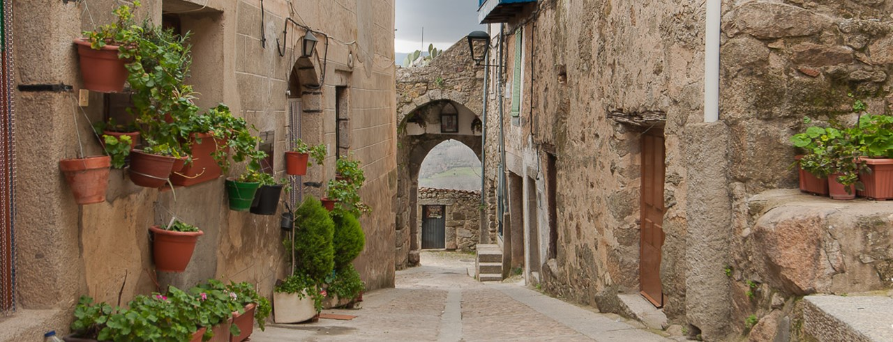
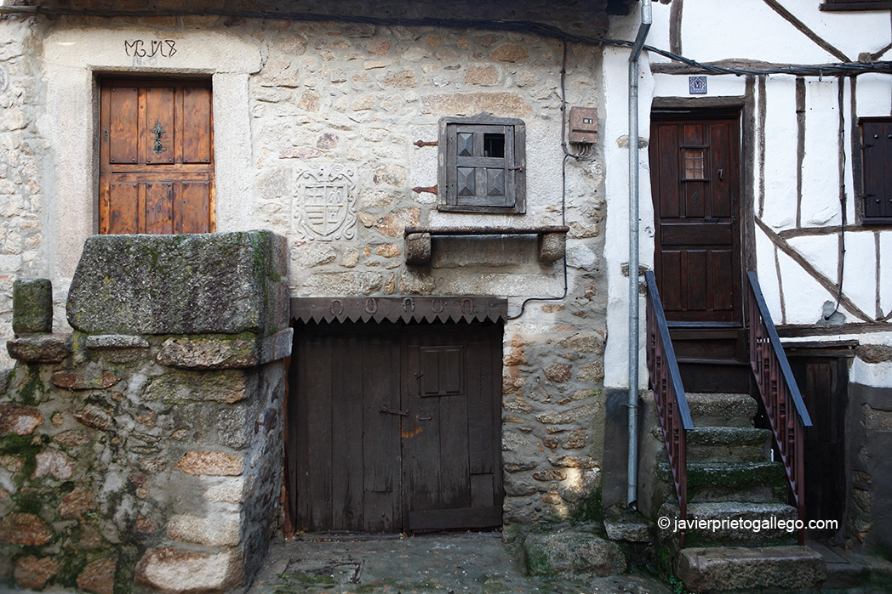
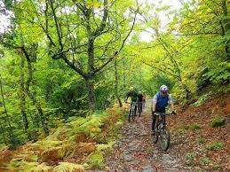

Castillo Medieval
La mayor obra histórica del pueblo

Campanario
Situado en la plaza de la Iglesia

Puerta de Nuestra Señora de la Cuesta
Situada al oeste, su nombre da culto a la patrona de la localidad

Puerta de Nuestra Señora de la Cuesta
Situada al oeste, su nombre da culto a la patrona de la localidad

Puerta de Nuestra Señora de la Cuesta
Situada al oeste, su nombre da culto a la patrona de la localidad
Miranda del Castañar es un municipio y localidad española de la provincia de Salamanca, en la comunidad autónoma de Castilla y León. Se integra dentro de la comarca de la Sierra de Francia. Pertenece al partido judicial de Béjar y a la Mancomunidad Sierra de Francia.


